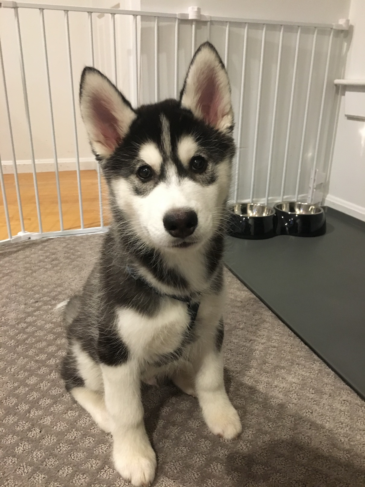
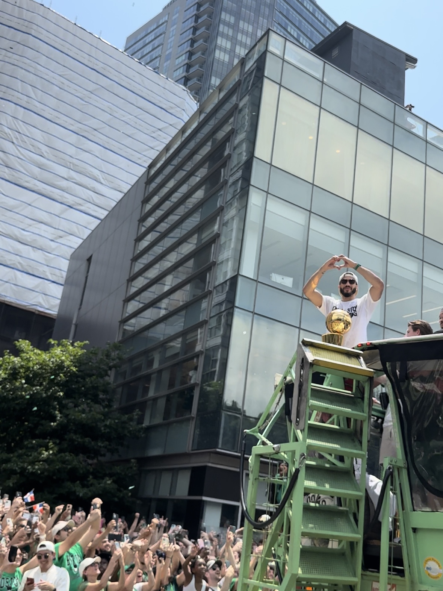
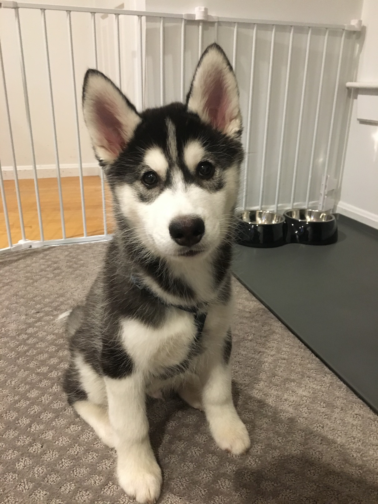
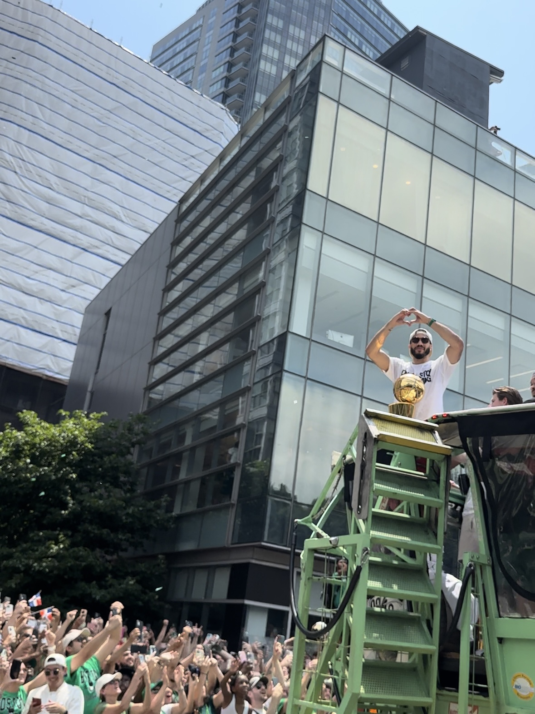
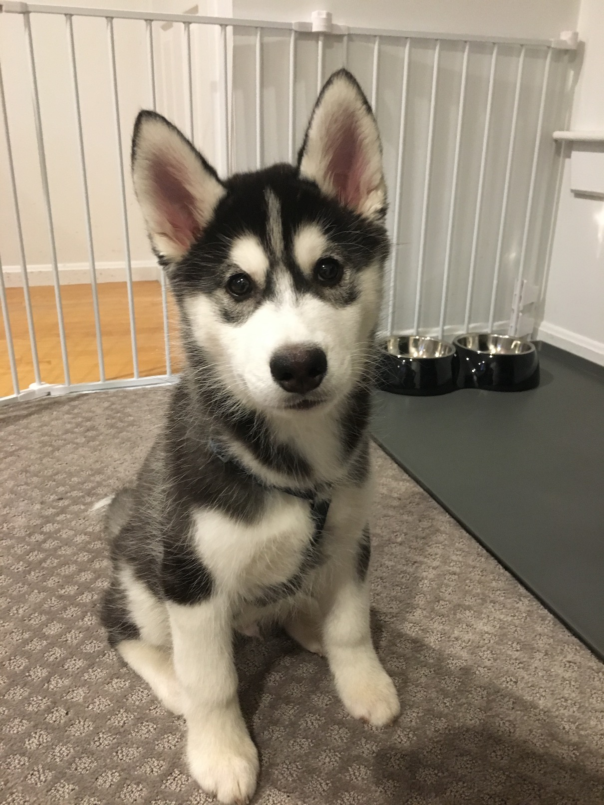
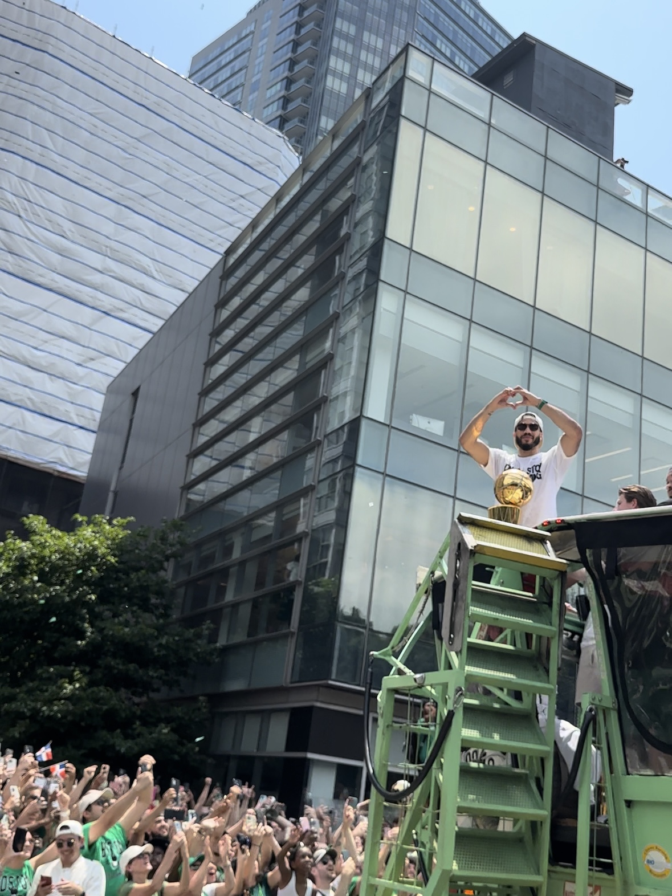

 
 
Some things I love to do are working out, skiing/snowboarding, playing with my dog, and following the Boston sports teams.
Hello, my name is Travis Tran, and I am currently a high school senior at the Massachusetts Academy of Math and Science at Worcester Polytechnic Institute in Worcester, MA matriculating to Johns Hopkins University in Baltimore, MD in fall 2024 majoring in biomedical engineering.
 
Some things I love to do are working out, skiing/snowboarding, playing with my dog, and following the Boston sports teams.
I have also participated in a lot of community service events in my local community and it is something I am extremely proud of. As co-president of my school's community service club, I helped to organize our "STEM Saturday" events to promote STEM education in the local area and also ran an Earth Day cleanup around the city of Worcester.